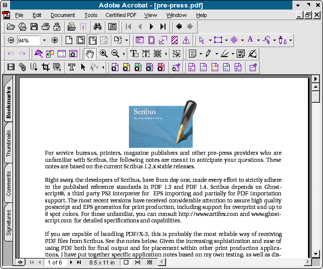

One of the facts of life in the desktop publishing world, is the occasional need for working in a cross platform environment. Fortunately, for Linux users in particular, the Wine Project and Codeweavers have made much progress in being able to successfully run many Windows applications on top of Linux.
My main interest and focus for these notes is being able to run the latest versions of full version of Acrobat which has special tools for checking PDF quality in order to test Scribus created PDF files, as well as occasionally running the odd Windows or DOS based utility.
Since migrating my own personal workstation to Linux as my default environment, I have dabbled with installing various Windows apps and kept a eye on this project for several reasons:
My experience is packaged versions of Wine rarely work well, with the exception of the Codeweaver wine preview releases. I always build from source. Typically the Wine project releases a snapshot tarball once a month. With Wine, there is a slightly different way of building Wine from the usual:
It is not quite obvious, but there is a way to use the Wine installer scripts which make installing much less difficult. To build the tarball from the root directory where you have untarred the source tarball, simply run ./tools/wineinstall and follow the instructions. Compiling from source, takes quite a while, so the ideal time for this is when your workstation will be idle. The benefit is the wine install will be carefully tailored to your setup, both software and hardware. I find it runs more reliably this way.
If you really do not want to install from source, grab the latest codeweavers rpm or deb. Their wine package also includes a nice graphical configuration tool for creating the wine.conf file, which is the the key to making Wine work well.
After installation, you need a wine.conf file. This is hidden in .wine in your home directory. Open in a text editor and study it carefully, the slight adjustments you make here can make a big difference in its performance and reliability. This is well commented and documented in the docs as well.
Sometimes, there are regressions: I will typically keep the previous snapshot source until I have found the newest one to work well as well as before. Once or twice in the past couple of years, I have reverted to a previous release because something was broken in a release.
Minuses: Printing support is weak. You can generate PostScript, for later conversion via Distiller or GSview. Wine will support CUPS if you have the correct libraries installed, but in general it is nowhere a finished part of the code.
The good stuff: The current Wine snapshot releases run Adobe Acrobat 5: both the 5.1 reader and full 5.0.5 version very reliably. After installation, find the intertrust plug-in folder and delete it before launching Acrobat. This was a very buggy plug-in to enable on-line buying of PDFs. In corporate installs of Acrobat, I make sure this is never installed, it has caused so many problems. The distiller part of Acrobat from Versions 3 to 5 install and work flawlessly, as long as it can locate all your font paths correctly. I have distilled hi-res 35 MB "press-ready" composite CMYK PDFs with ease. I have also loaded the free PDFInspektor plug-in from Callas. I use this to test PDF/X-3 conformance of Scribus PDF/X-3 files (They passed the very first time ;))
Installing applications has become much more reliable in the last year. Where Wine sometimes has troubles is custom installs. Sometimes, you just have to click through the defaults to get an application to install properly.
I would not discourage anyone from buying Crossover Office. The newest version 4.x runs a number of applications quite well, including Photoshop 5,6,7, as well as in my tests, Illustrator 10 with some issues and Indesign 2.0.2 pretty well. The last two can be taxing even on real Windows at times. I found the demo to have a very polished and easy to use installer, which makes configuration a snap. Codeweavers has contributed a great deal to the success of the Wine project thus far and have been good citizens in the open source community. You can also get Crossover Office with some versions of the Suse and Xandros distributions.

Although Acrobat 5.0.5 is not officially supported by Codeweavers yet, it installs and runs very well. Until the day when Linux/Unix has the same parity in commercial application support, Wine is a good transition strategy. Hopefully, you will find these notes useful in supporting your use of Scribus.